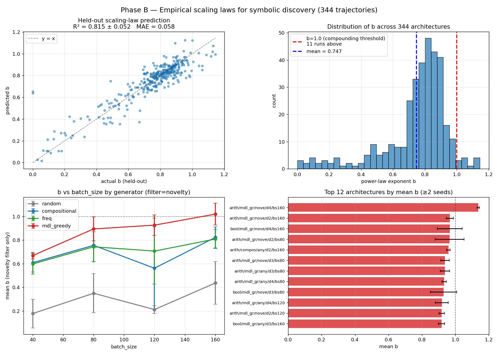
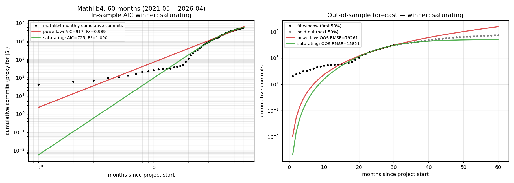

Studies Mathlib4 monthly file-addition counts as a real-world growth dataset to test saturating power-law models.
Abstract
We investigate growth dynamics in deterministic equational discovery substrates. Across three toy domains (arithmetic, boolean, higher-order list; n=592 trajectories), short-range substrate sizes fit a power-law N(t) proportional to t^b. Within each substrate b is architecture-sensitive (cross-validated R^2 approximately 0.82); the regression does not transfer across substrates (arith+bool to list yields R^2 approximately -0.84). A heuristic mean-field closure model predicts a saturating power-law dN/dt = K N^k exp(-mu N) of which the pure power-law is the short-range approximation. Three robustness checks: bootstrap intervals on (k, mu) are tight in 4/5 toy trajectories and degenerate in 1/5; out-of-sample forecasting on toy data (fit first 100 epochs, predict next 400) is won by pure power-law 5/5, indicating the toy trajectories do not reach saturation; on two real-world growth proxies the result splits. New Mathlib/*.lean file additions per month (mathlib4, 60 months, 9701 files) support the saturating form on OOS forecasting by approximately 7x over pure power-law; Coq mathcomp monthly commits (129 months, 3083 commits) favour pure power-law on both tests with mu collapsing to zero. The dynamics are substrate-conditional at two levels: within-substrate architecture-to-b regressions do not transfer, and the preferred functional family for N(t) itself (pure vs. saturating power-law) differs by substrate. We propose "saturating power-law growth with substrate-conditional (k, mu), observable when the substrate has reached its saturation regime" as a working framing.
Problem
Empirical scaling laws guide LLM engineering, but whether deterministic symbolic discovery systems obey comparable growth laws is unknown. It is unclear what functional form governs substrate growth and whether scaling behavior transfers across domains.
Approach
The authors run 592 discovery trajectories across three toy equational substrates (arithmetic, boolean, higher-order list) and fit power-law and saturating power-law models to substrate size over time. A gradient-boosted regression predicts the trajectory exponent b from architecture features. They derive a mean-field closure model predicting dN/dt = K N^k exp(-mu N) and test it against two real-world growth proxies: monthly new Mathlib .lean files (60 months) and Coq mathcomp commits (129 months).

Figure 1: Phase A+B in arith+bool: held-out scaling-law prediction (R {}^{2}=0.815 ), distribution of b , b vs. batch-size by generator, top-12 architectures.
Results
Short-range growth fits power-law t^b with cross-validated R^2 of approximately 0.82 within each substrate, but cross-substrate transfer fails (R^2 = -0.84). The saturating power-law wins out-of-sample forecasting on Mathlib data by approximately 7x over pure power-law, while Coq mathcomp favors pure power-law. The preferred functional form is substrate-conditional.

Figure 4: Mathlib4 monthly cumulative commits (proxy for substrate size). Left: log-log fits across all 60 months; saturating power-law wins in-sample AIC (725 vs 917 for pure power-law). Right: out-of-sample forecast fit on first 30 months, predicting next 30; saturating RMSE 15,821 vs pure power-law 79,261 ( \sim 5 \times better).